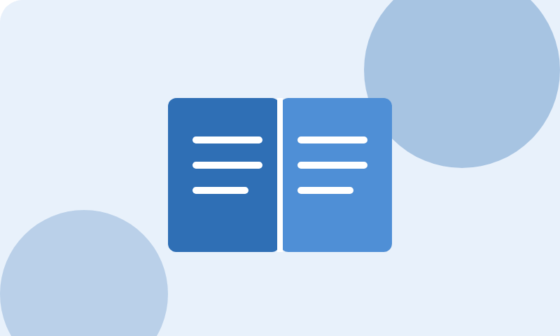

Reforço Escolar Semente

- Educação
- Vagas abertas
Aulas de reforço em português e matemática para crianças do ensino fundamental, no contraturno escolar.
- Público
- Crianças de 7 a 14 anos
- Quando
- Segunda a quinta, das 14h às 17h
Como ajudar
- Voluntário: dar aulas ou acompanhar a lição de casa.
- Doação: material escolar e lanches para as turmas.